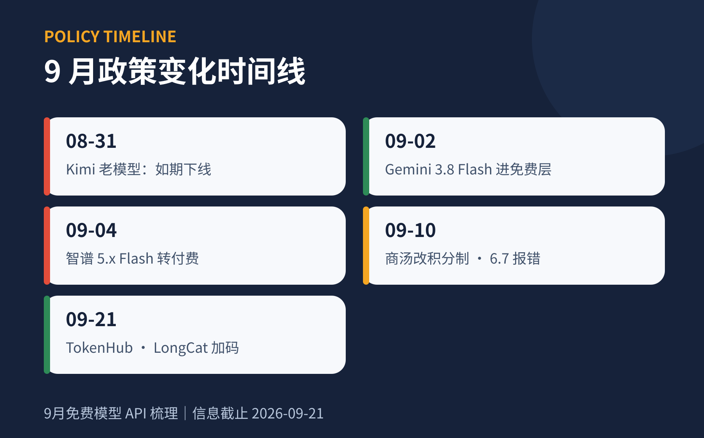
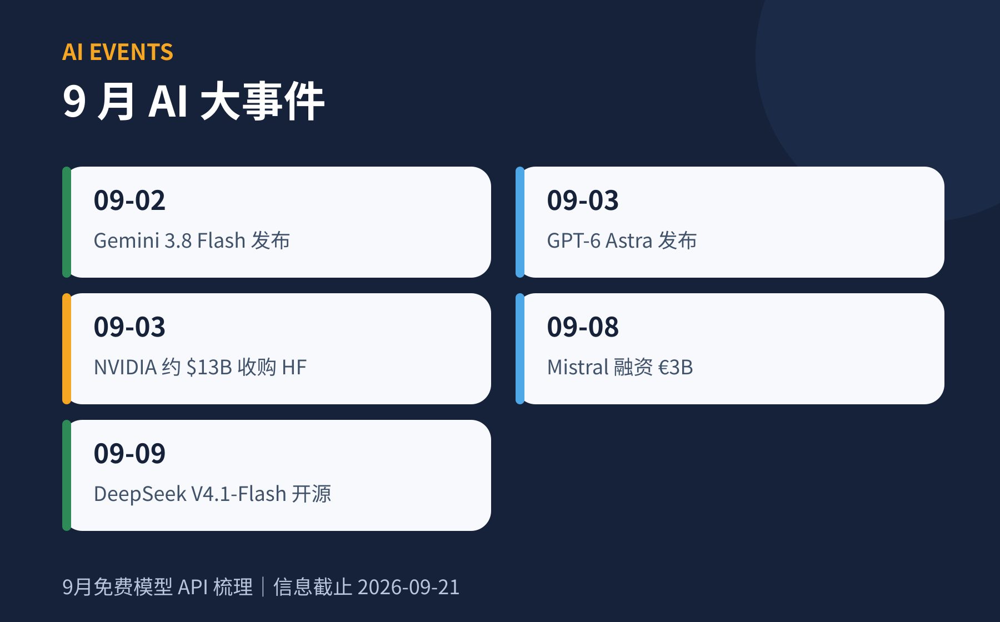

免费模型 API
一句话结论：海外免费层「总量稳定、名单轮换」，国内久违加码——腾讯 TokenHub、火山协作奖励升级、美团 LongCat 上线；上月预告的下线全部如期落地，红名单反而跑出一个复活者（AI21）。
27可测试
11需核实
10暂不推荐
09.21数据快照
平台目录
核查日期 · 09.21 · 共 27 家按免费方式分为四组：■ 永久免费层（长期可用）· ■ 循环额度（每日或每月刷新）· ■ 注册赠金 / 试用（一次性）· ■ 聚合平台（一个 Key 调多模型）。每张卡片：免费内容 → 关键模型 → 限制与门槛。
永久免费层6 家
Google Gemini长期免费层
约 20 款模型免费，新旗舰 3.8 Flash 发布当天即可用
gemini-3.8-flashgemini-3.7-flashgemini-2.5-progemma-4智谱 AI8 款 Flash 免费
4.x 世代 Flash 全免费，国内直连、OpenAI 兼容
GLM-4.7-FlashGLM-Z1-FlashGLM-4.6V-FlashCogView-3-FlashGroq长期免费层
推理速度最快的免费层，政策与 8 月完全一致
gpt-oss-120bgpt-oss-20bqwen3.6-27bwhisper-large-v3SambaNova长期免费层
免费层 5 款，本月唯一逐字节无变化
DeepSeek-V3.1Llama-3.3-70Bgpt-oss-120b书生 Intern AI免费 OpenAI 兼容
S2 正式版 9.14 开源上线，免费 API 延续
intern-s2intern-s1-prointernvl3.5Agnes AI全模态免费
文本、图像、视频全免费，矩阵换代至 2.5 / 3.0 世代
agnes-3.0-flashagnes-image-2.5-flashagnes-video-2.5-flash循环额度5 家
Cloudflare Workers AI每日额度
每日 10,000 Neurons，覆盖 40+ 模型
kimi-k2.5glm-4.7-flashllama-3.3-70bgpt-oss-120b商汤 SenseNova积分制公测
Free 档 60,000 积分 / 5 小时（约 1500 次调用）
sensenova-6.8-flash-litesensenova-u1-fast扣子 Coze每日积分
每日 1500 免费积分，登录发放，50+ 模型可用
豆包KimiDeepSeekQwenCohere每月额度
Trial Key 每月 1,000 次调用，禁生产用途
command-a-pluscommand-r-plusnorth-mini-codeHugging Face每月额度
每月 $0.10 信用，覆盖 100+ 路由模型
llama-3.3-70bdeepseek-v4qwen3-235b注册赠金 / 试用13 家
美团 LongCat新用户赠金
新用户 1000 万 token；邀请新用户双方各 1000 万 🆕 读者 9-21 登录核实：无每日免费额度
longcat-flash-litelongcat-2.0腾讯 TokenHub资源包 · 1 年
每模型 100 万 token、有效期 1 年，还接入第三方模型 🆕
hunyuan-hy4-previewdeepseek-v4-proglm-5Kimi 开放平台代金券 · 读者核实
登录页明示「认证领 15¥ 体验金」（9-21 读者核实）；实名认证后发放
kimi-k3kimi-k2.7-codekimi-k2.6火山引擎·豆包赠金 + 循环
每模型 50 万 token + 协作奖励：个人 200 万/模型/日 · 企业认证 500 万/模型/日
doubao-seed-evolvingseed-2-1-pro阿里云百炼一次性赠金
每个模型各 100 万 token，覆盖 70+ 模型
qwen-maxqwen3.8-maxqwen-vl-max百度千帆一次性赠金
每模型 100 万 token（官方帮助文档直读）；ERNIE-Speed 非永久免费：8K/128K 各 100 万、仅 1 个月（官方客服澄清）
ernie-4.5-turbodeepseek-r1deepseek-v3.1百川智能一次性赠金
新用户 80 元（≈1000 万 token）+ Assistants API 限时免费 🔄 官方定价页直读
Baichuan-M3M3-Plus讯飞星火限时活动
每模型 20 万 token + 新用户 1 万次交互量（官网口径）
spark-4.0-ultraspark-lite硅基流动赠金 + 免费模型
新用户 14 元 + L0 免费档 16 款 ¥0 模型
qwen3-8bglm-4-9bxing4.0-29bAI21限时试用
$10 信用 / 7 天，免信用卡 🆕
jamba-minijamba-largeMistral订阅附带 ✅
Free plan 含 $10/月 API 信用（官方定价页原文"$10 /mo in API credits"，9-21 代理直读）
mistral-large-3codestralvoxtralFireworks AI注册赠金
注册送 $1，新模型上架快
kimi-k3deepseek-v4-proglm-5.2Azure 免费账户试用额度
$200 / 30 天 + 12 个月常免 AI 服务
speechdocument-intelligence聚合平台3 家
OpenRouter:free · 动态 24 款
一个 Key 调全部免费款；官方免费路由器自动切换可用模型
qwen3.8-27b:freeinkling-small:freenemotron-3-ultra:freeopenrouter/freeNVIDIA NIM50+ 免费端点
动态免费端点目录，含多模态与专项模型
deepseek-v4-flashnemotron-3-ultraglm-5-3ModelScope 魔搭魔粒制 ✅
魔粒体系提供免费算力：短期魔粒 24h / 长期魔粒 90 天，社区行为获取，适用 API-Inference（官方规则确认）
qwendeepseekglmkimiRAG 辅助专题
向量化 · 重排 · 语音 · 检索以读者 9-10 已核验清单为底稿、编辑部 9-21 复核更新。✅ = 官方已核验，⚠️ = 第三方口径。
向量化与重排Embedding / Rerank
硅基流动RAG 免费档 ✅
bge-m3、bge-reranker-v2-m3、SenseVoiceSmall、XingChenASR 完全免费（限 RPM）
BAAI/bge-m3bge-reranker-v2-m3SenseVoiceSmall阿里云百炼赠金 90 天 ✅
text-embedding-v4 / qwen3-rerank 每模型 100 万 token；异步批处理另送 2000 万
text-embedding-v4qwen3-rerank-4bGoogle Gemini免费层 ⚠️
gemini-embedding-001（3072 维）约 1500 请求/天（第三方口径）
gemini-embedding-001NVIDIA NIM免费端点 40 RPM
nv-embedqa 向量化 + rerank-qa 精排 + Parakeet ASR + Magpie TTS
nv-embedqa-e5-v5rerank-qa-mistral-4bCohereTrial ✅
embed-v4 + rerank-3.5，每月 1,000 次（与 Chat 共享），质量顶级
embed-v4rerank-3.5智谱 AI付费 · 9-21 核实
Embedding-3/2 本体付费（0.5/0.25 元/百万）；价格页无免费 rerank——新用户 2000 万赠金可抵扣
embedding-3语音STT / TTS
GroqSTT ✅
whisper-large-v3-turbo 2,000 请求/天（约 28,800 音频秒/日），海外转写最优解
whisper-large-v3-turbo火山豆包语音试用 ✅
STT 每应用 20 小时；TTS 2 万次 / 声音复刻 2 万字符（半年有效），中文自然度第一梯队
seed-asrseed-tts其他与本地混编
Azure F0 50 万字符/月；ElevenLabs 1 万字符/月（禁商用）；Cloudflare aura-1 ⚠️
kokorochat-ttspiper检索与向量库9-21 新核实
Exa联网检索 ✅
注册 $20 + 每月 $10 credits，免绑卡——RAG 联网检索的免费解
exa-searchQdrant Cloud向量库 ✅
Free forever：0.5 vCPU / 1GB RAM / 4GB 盘 + 免费云端推理
qdrant-cloudTavily / Pinecone / Zilliz待核 ⚠️
定价页为 JS 渲染，本轮未能完成核验；使用前自行确认免费档
tavilypineconezilliz零成本 RAG 组合： 硅基 bge-m3（向量）+ bge-reranker-v2-m3（重排）+ GLM-4.7-Flash（生成）；带联网检索加 Exa；涉敏场景全本地（均 Apache 2.0）。Jina 开源版 CC-BY-NC，Cohere / ElevenLabs 免费层禁商用。
变更记录
上期验尸 + 本月变化 · 10 项上月预告的事件是否落地、口径有何修正。
08.31
Kimi 老模型如期下线
moonshot-v1 k2.5官方模型页确认；现役仅 kimi-k3 / k2.6 / k2.7-code08.31
商汤 6.7 下线，旧 ID 直接报错
sensenova-6.7路由过渡期已结束；免费改积分制 60,000/5h09 月
智谱 5.x 世代 Flash 转付费
GLM-5.3-Flash「Flash=免费」规则只适用 4.x；8 款 4.x Flash 仍免费09 月
国家超算互联网邀测转正式计费
DeepSeek-V4-Flash¥1/百万 token；免费仅剩网页 Chat；9.10 上线 V4.1 Flash09.04
腾讯 TokenHub 额度升级每模型 100 万 / 1 年，活动至 12.31，接入 DeepSeek-V4、GLM-5
09 月
火山协作奖励持续加码（官方页核实）个人 200 万/模型/日、企业认证 500 万/模型/日，代价是授权调用数据训练
09 月
美团 LongCat 上线 🆕
longcat-flash-lite新用户 1000 万 + 邀请双方各 1000 万（读者核实：无每日额度）09.21
OpenRouter 免费款 15 → 21，stealth 均已下架ox-alpha → Union Alpha 接棒后也消失；新增官方免费路由器
09.21
谜底揭晓：魔搭「新计费」即魔粒体系短期魔粒 24h / 长期 90 天，社区行为获取（官方规则确认）；"每日 2000 次"作废，魔搭回归 ✅
09.21
官方复核轮：千帆、百川、火山、讯飞、Kimi、Mistral 获官方口径浏览器渲染 + 读者登录页 + 代理直读 + 官方客服澄清；百川/Kimi/Mistral/魔搭 回归 ✅（27/11）；ERNIE-Speed 证伪（限时 1 个月）；Gemini 限额表转 AI Studio 动态
AI 大事件
09.01 – 09.21 · 10 条本月板块新增：模型的迭代节奏，决定下个月免费层里会出现什么。
09.01
Anthropic 发布 Claude Fable 5.1 · Mythos 5.1同日 GA 于 GitHub Copilot；API 付费
09.02
Google 发布 Gemini 3.8 Flash · Flash Cyber发布当天进免费层，本月唯一；约 10 RPM / 1500 RPD
09.03
OpenAI 发布 GPT-6 Astra105 万上下文，9.04 GA；付费旗舰
09.03
NVIDIA 约 $13B 收购 Hugging Face 落定待交割；开源托管中立性与 $0.10 免费信用待观察
09.08
Mistral 融资 €3B主打主权开放权重 AI，自托管生态利好
09.09
DeepSeek V4.1-Flash 发布并开放权重552B MoE 多模态；9.14 起 v4-pro 按新模型路由计价
09.10
Anthropic 披露假「廉价 Claude」转售骗局GTG-50021 实际代理别家模型并窃取凭据——别碰低价中转
09.14
书生 Intern-S2 正式版开源HuggingFace / ModelScope 上线；Preview 397B 10.31 下线
09.15
Google 发布 Gemini 3.8 Live音频到音频，Live API 预览；免费口径未确认
09.16
OpenRouter stealth「Union Alpha」出现疑为混装 GLM/Gemini 的路由器；截至 09.21 已消失
本月图表


风险清单
需核实 11 · 暂不推荐 10需核实 = 有免费佐证但关键口径未获官方确认，注册前先到控制台验证；暂不推荐 = 已确认无免费层或政策已死。
需核实 · 11 个
重点：白山（官网已撤下赠金活动）· Anthropic 赠金金额未标
暂不推荐 · 10 个
本月变动：AI21 除名（$10/7 天试用确认）；DeepSeek 官方赠额说法未获证实，按官方定价页回到红名单。
接入前提醒
01 · 注册门槛确认实名、手机验证和绑卡要求，注意地区限制。
02 · 计费方式确认超额后是停服、报错还是自动进入付费。
03 · 数据安全保护密钥；企业代码与隐私数据不走免费层和匿名模型。
04 · 使用定位免费层只用于原型与备用，不承载生产流量。